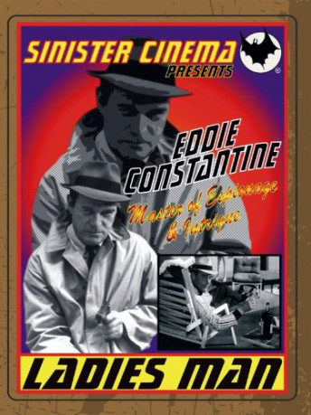

IMDB-Wertung: 5.9 / 10
IMDB-Wertung: 5.9 / 10  Metascore:
Metascore: 
Alternativ: Ladies' Man (Englischer Titel)
 IMDB-Wertung: 5.9 / 10 Metascore:
Jahr: 1962
Dauer: 91 Minuten
FSK: 12
Land: Frankreich Studio: Constantin FilmTonspuren:
Untertitel:
Auflösung: SD (640x272) Größe: 698 MB
Genre: Drama
Regisseur: Bernard Borderie
Drehbuch: Bernard Borderie
Soundtrack:
Darsteller:
 Eddie Constantine als Lemmy Caution
Eddie Constantine als Lemmy CautionDatei: X:\Person\Eddie Constantine\Ist nichts für kleine Mädchen, Das (1962, FSK12, 640x272).avi seit 05.07.2017
Festplatte: HD Collection-7+mehr(A-Z)+Person
 Es gibt insgesamt 10 Filme in der Gruppe 'Person\Eddie Constantine'
Es gibt insgesamt 10 Filme in der Gruppe 'Person\Eddie Constantine'